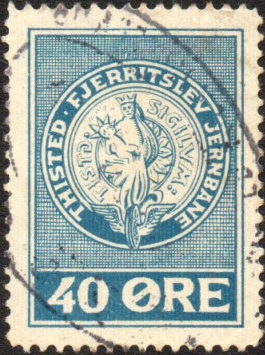
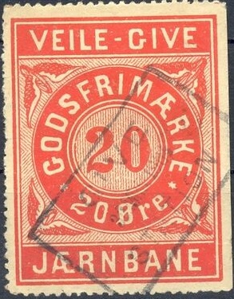

{kind=link}

Large design and smaller design; With seal of the city of Thisted in the center "TISTD SIGILUM"
Return To Catalogue - Denmark - Denmark Railway Stamps, overview
Note: on my website many of the
pictures can not be seen! They are of course present in the
catalogue;
contact me if you want to purchase it.

Large design and smaller design; With seal of the city of Thisted
in the center "TISTD SIGILUM"
In the larger design I've also seen the value 10
o green, 20 o red, 60 o blue, 90 o brown.
"35" on 25 o blue, "50" on "35" on
25 o blue
In the smaller design I have seen 40 o blue, 50 o grey, 60 o
blue, 75 o brown, 90 o red, 175 o red, 330 o orange, 440 o brown
and 1 Kr green.
"10 øre" on 125 o yellow, "10 øre" on 175 o
red, "10 øre" on 440 o brown, "40" on 90 o
red, "80" on "70" on 60 o blue,
Issued stamps from 1917 onwards


1917: 25 o with inscription "FOR PAKKER INDTIL 5
KILOGRAM" in the ellipse. "40" (6 types) on 25 o
red, "60" (at least two types) on 25 o red also exist.


1918, with inscription "GODSFRIMAERKE" in the ellipse:
exist: 5 o blue, 5 o green, 5 o orange, 10 o green, 15 o blue, 20
o green, 25 o red, 25 o orange, 40 o yellow, 50 o blue, 60 o
green, ; "45" (4 types) on 5 o blue, "45" (4
types) on 10 o green, "45" (9 types) on 20 o green,
"45" (two types) on 25 o orange, "45" (18
types) on 40 o yellow, "75" on 5 o blue, "60"
(3 types) on 5 o green(?), "90" (4 types) on 5 o
orange(?), "90" (12 types) on 50 o blue, 75 (gold) on
90 on 50 o blue (29 types).

White oval: 25 o red, I've also seen 40 o yellow.

1934 issue
In 1934 (upto 1966?) a type with "T K V
J" in the center was issued.
It exists in the values: 5 o orange 10 o orange, 15 o orange, 20
o orange, 25 o blue, 30 o yellow, 40 o green, 50 o violet, 50 o
red, 60 o grey, 60 o brown, 70 o green, 70 o black, 75 o brown,
80 o green, 90 o red, 90 o yellow, 90 o blue, 100 o red, 110 o
green, 120 o green, 120 o orange, 150 o violet, 175 o green, 200
o orange, 220 o red, 225 o green, 225 o blue, 300 o blue, 330 o
green.
20 on 5 o orange, 20 on 120 o green, "80" on 70 green,
90 on 80 o green, 100 on 90 o red, 110 on 60 o brown, 120 on 110
o green, 125 on 90 o blue, 150 on 50 o violet, 175 on 225 o
green, 225 on 25 o blue, 300 on 120 o green.

Railroad crossing, I've seen a similar stamp with inscription 10
Kr black "VESTBANEN"
In the above railroad crossing design (1953)
exist: 10 o black, 60 o brown, 70 o blue, 75 o green, 80 o
yellow, 100 o orange, 100 o red, 110 o violet, 125 o lilac, 150 o
blue, 175 o grey, 220 o green, 225 o brown, 350 o orange, 400 o
violet, 500 o orange,
"70" on 80 o, "60" on 110 o, "90"
on 110 o, "100" on 125 o, "150" on 70 o,
"150" on 220 o, "200" (red) on 225 o,
"1250" (red) on 400 o, "1700" (violet) on 350
o


1903 Lion with crown in a circle, inscription "VARDE V.N.J.
N.NEBEL GODSFRIMAERKE"


1913 Lion with crown in a circle, inscription "VARDE N.NEBEL
TARM. GODSFRIMAERKE"
There are several types of the above stamps:
"V.N.J" on top
Broad letters at the bottom, especially the "G",
"S" and "R" of "GODSFRIMAERKE": 10
o green, 20 o red (solid background behind lion), "10"
on 20 o red,
Narrow letter at the bottom, especially the "G",
"S" and "R" of "GODSFIRMAERKE", no
dot behind this word: 25 o orange
"N.NEBEL" on top:
Without dot behind "GODSFRIMAERKE" and tall
"N.NEBEL": 10 green, 25 o orange, "45"
(violet) on 25 o orange
With dot behind "GODSFRIMAERKE" and less tall
"N.NEBEL": 35 o green, 60 o red, 90 o violet,
"75" (violet) on 60 o red, "75" on 90 o
violet
I've seen a commemorative cover (Jubilaeumskuvert) with an image of a 20 o red and a "10" on 20 red printed side by side. It has inscription "VESTBANEN 15.marts 1903 1978".

In this design I have seen 25 o brown, 40 o blue, 60 o red, 75 o
green, 90 o yellow.



Note the two different types of the 25 o

1914 design
In the above 1914 I have seen: 25 o brown, 30 o blue, 35 o red, 40 o orange, 50 o blue, 50 o green, 60 o red, 60 o brown, 90 o yellow. Also "35" (blue) on 90 o orange, "45" (purple) on 60 o brown.
1947 commemorative issue
1897-1947 commemoration: image of a steamtrain: 30 o blue and 60 o red.

Pictorial design with "V.V.G.J.", churches etc: 25 o orange, 30 o violet, 40 o blue, 50 o violet, 100 o red.

In this design with "1879-1979" I have also seen 5 Kr
green and black and 8 Kr black.


1943: "V.L.T.J. RUTEBILER" for buses; I have seen 25 o
red, 50 o brown, 75 o blue, 100 o green.
Pictorial designs:
Lighthouse: 90 o violet
Thyboron harbor: 30 o blue
Veljby Kliller: 75 o brown (perforated or imperforate)
Lemvig Museum: 100 o blue
Thyboron harbor, train with silos: 4 Kr blue and black
With "VLTJ 1879 - 1954": 100 o blue (steamtrain), 80 o brown (modern train)
I have seen a more modern design (1979) with "VLTJ 1879-1979" with the image of a coastline with a lighthouse: 5 Kr green and black.
I've only seen the 10 Kr black with the "VESTBANEN"
inscription. Many more stamps in this design with inscription
"PRIVATBANERNE VARDE" exist.